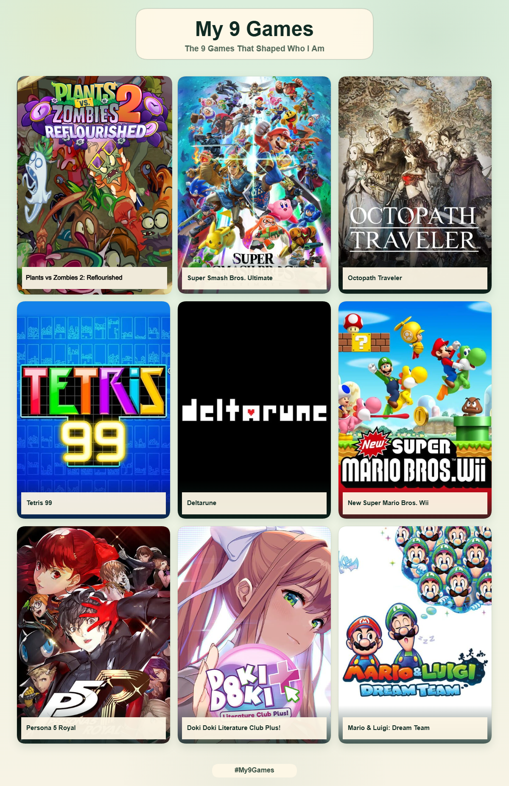

There's been a recent trend on LinkedIn to share "My 9 Games" using this website: The 9 Games That Shaped Who I Am. The beauty of this chart is its freeform nature, being able to interpret it in different ways.
I chose to interpret the list as the top 9 games that have impacted my life in one way or another, with an aspect from each game sticking with me throughout my life. Below are the 9 games that have shaped who I am in no particular order.

Plants vs Zombies 2: Reflourished
Plants vs Zombies 2: Reflourished (shortened to RFL) is a mod of the original Plants vs Zombies 2 (aka vanilla), designed to “bring back the classic pre-2017 feel to PvZ 2, while adding a bunch of new content as well.” As a kid, PvZ2 was one the mobile games I remember playing on my mom’s phone, and I discovered this mod in 2022.
Since I hadn't played PvZ2 in years, I decided to pick up the mod and re-live my experiences of the game. I’ve stuck with RFL for over 3 years now, enjoying the new content releasing periodically and getting better at PvZ2 as a whole. I’ve also been active in the community’s custom level making scene, which has led me to think about PvZ2 from a game designer’s perspective when playing.
I’ve been making custom levels for the discord server for about 2 years, and I’ve learned a lot about game design for tower defense style games and games in general. Seeing the game in this light has really made me appreciate the thought and effort put into worlds from the original game like Dark Ages and Pirate Seas, as well as the mod’s exclusive worlds like Steam Ages and Caliginous Carnival.
Super Smash Bros. Ultimate
Super Smash Bros. Ultimate is one of my “comfort games” - like when I want to play a game but I’m not sure which one, I boot up this game. I’ve been playing this game since it released and I have clocked over 5,800 hours of play time. I started the series with Smash Bros on the 3DS, then the WiiU, and played a bit of Brawl, but Ultimate has been the main one I’ve stuck with (mainly because it’s on the Switch).
Over the years, I’ve come to appreciate and criticize some of the decisions made for Ultimate (which I may cover in future blog posts), but I think overall it is the best game of the series. Super Smash Bros. Ultimate is the game that got me involved with my school’s esports team for a bit, but since the coach didn’t put much effort into actually coaching us, I lost interest in the team.
Octopath Traveler
Octopath Traveler was the game that made me want to become a game developer. I remember traveling in the Sunlands area thinking to myself just how immersive and fantastic this game was in both its gameplay and story, and that was when I decided that I wanted to dedicate my life to creating these experiences to give people these same feelings and reactions. What I find so funny about this game is that I downloaded the demo on a whim,
only knowing that it was some type of turn-based RPG. Octopath’s home menu screen was just the logo on a black background, so I didn’t really know what I was getting myself into. I chose Tressa as my starting character, and the battles’ gameplay and music (specifically Battle 1) absolutely hooked me. I then replayed the demo on different save files, starting with Primrose and then Therion.
While Octopath Traveler 2 is objectively the better game (with its Quality of Life additions and stronger ties between the travelers), the first Octopath Traveler still holds a special place in my heart.
What the game looks like on the Switch's home menu. Since there's nothing about the actual game save for the logo on the menu screen, I didn't really know what to expect. I'm not too upset that the menu icon is so bland, I just find it a bit funny.
Tetris 99
Tetris 99 is also another one of my “comfort games.” My first exposure to Tetris was on my aunt’s original Game Boy, as consoles like the Game Boy and 3DS were something that connected us. Throughout my life, I’ve played many different versions of Tetris, but Tetris 99 is the best iteration to me. I find most other Tetris versions have the “cap” (the fastest speed at which pieces fall down) to be too slow,
since I still have ample control over placing the pieces, and I end up growing bored and disengaged (since the game stops being challenging). However, I find the cap for Tetris 99 (especially the Invictus mode) to be a speed that still keeps me engaged.
For as simple as Tetris is, its gameplay loop has always captured me, and Tetris 99 is a way to practice and refine the quick and proactive thinking of the game in a more competitive environment. While the garbage from opponents can sometimes feel unfair, I often find myself ranking in high places despite that since I can somewhat consistently get 1st place in the normal lobbies whenever I play.
Deltarune
Deltarune is another game where I downloaded the demo on a whim. I played Chapter 1 and had my fun with it, but it just didn’t quite grip me. However, when Chapter 2 was made available for free, I downloaded it and instantly fell in love with the game. What stood out to me was the humor of the game, the writing, and its subversive take on turn-based RPG gameplay. I had heard of Undertale previously
but never played it (I didn’t actually own it until long after Chapter 2 released), so Deltarune was my entrance into the world of Hometown. The character that stuck out to me the most in Chapter 2 was Spamton, due to his jarring nature and backstory, and his battles were the most fun I had in the chapter. When Chapters 3 & 4 released in June 2025, I instantly bought the game and continued to fall in love with the characters and worlds.
It’s fascinating trying to discover all of the secrets in each chapter, and analyzing the design decisions made when creating each chapter is another way to engage with the game that I find so fun and mesmerizing.
New Super Mario Bros. Wii
New Super Mario Bros. Wii and Mario Kart 7 were some of the first video games I ever played. My mom bought my sister and I a Wii in 2011 (and a 3DS shortly after), and these 2 games were my gateway into gaming as a hobby (then later a career). As a kid, I wasn’t very good at NSMBW, but I kept coming back to it over and over again, with one vivid memory being my struggle with the World 7-Fortress level.
I replayed the game again a few years ago and 100%’ed it, so the game still holds up to me now that I’m skilled enough to actually beat it.
Persona 5 Royal
I was introduced to Persona 5 through Joker’s inclusion in Super Smash Bros. Ultimate. Once Persona 5 Royal finally released on the Switch, I bought it at Target essentially day one. As I played the game throughout my freshman and sophomore year of college, my roommate would end up watching me play it, and that’s how he was introduced to the series, making it something that we could both bond over.
It was easy to relate to the Phantom Thieves since their lifestyle felt like a college lifestyle, and of course, we were in college. While the vanilla content of Persona 5 was great, Maruki’s entire arc was something that stood out to me and still sticks with me to this day. My roommate and I still talk about Maruki’s motivations and actions and how his plan wouldn’t hold up under further scrutiny, but I’ve often thought about if something similar to his plan could ever exist.
A life without pain or sorrow is an interesting thought experiment, and as someone who is interested in human psychology, it’s fun to toy around with that idea every now and then.
Doki Doki Literature Club Plus!
Doki Doki Literature Club and World End Syndrome were some of the first visual novels I ever played and were my introduction into the genre. Even though Doki Doki Literature Club was free on PC, I bought DDLC+ for Switch since I’m more of a console gamer. It was easy to get attached to the characters due to the school setting, since I was also in high school when I first played DDLC. Act 1 of the game affected me so much when I first played it that I had to put the game down for a while because of how devastating it was.
However, I came back months later and finished the game, thoroughly enjoying the story and its subversions of the genre. I even utilized the characters for some side projects I made during my time at college.
Mario & Luigi: Dream Team
Mario & Luigi: Dream Team was the first ever turn-based RPG I remember playing, and I absolutely fell in love with the genre. The series as a whole is great (I’ve played all of them except for Superstar Saga), but since I played Dream Team first, it’s the one that means the most to me. This game also introduced me to mechanics that I think should be in every turn-based RPG: the ability to re-fight bosses and a “Sound Test” option.
One reason I adore Super Smash Bros. Ultimate so much is how refined the Sound Test option in the game is (even allowing you to basically treat the Switch as an MP3 player when using it portably), and it was magical beating Dream Team for the first time and unlocking the game’s Sound Test (called “Jukebox” in-game) mode. This game’s music is stellar, and having a dedicated place to listen to all of the tracks is so convenient, which I think every game should have.